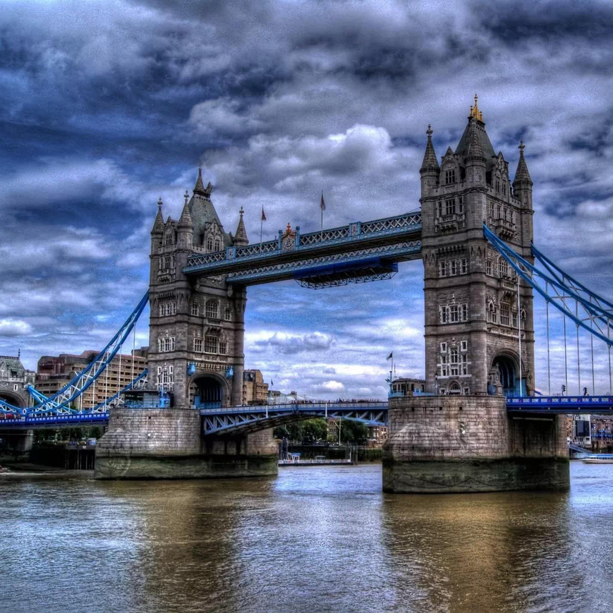
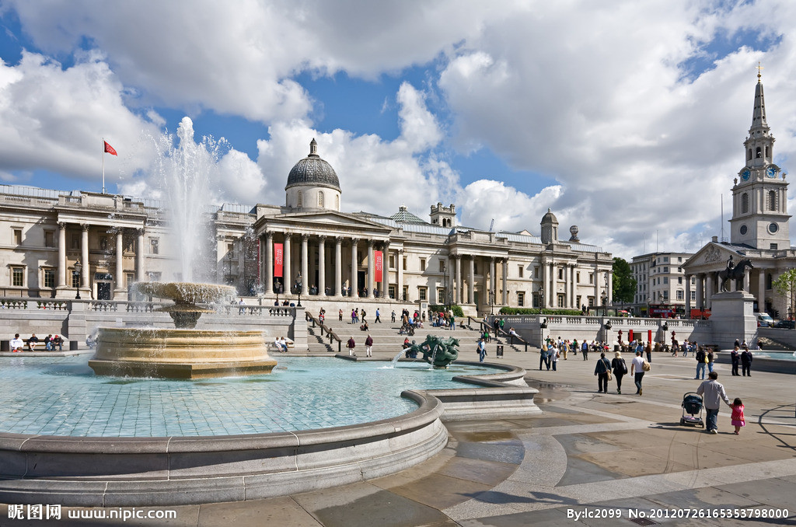
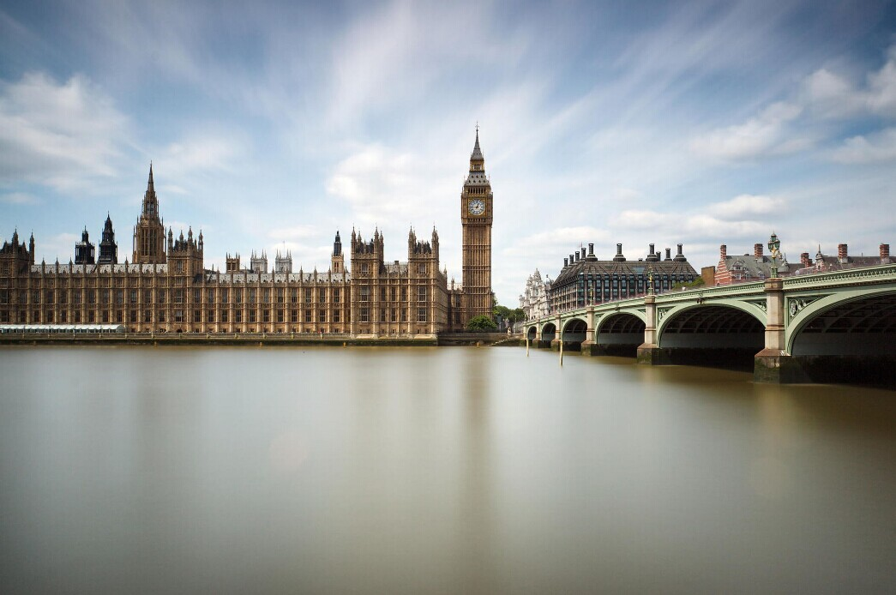
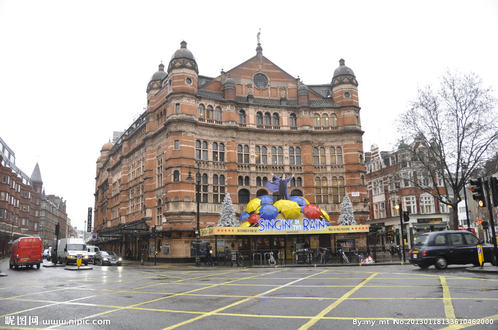
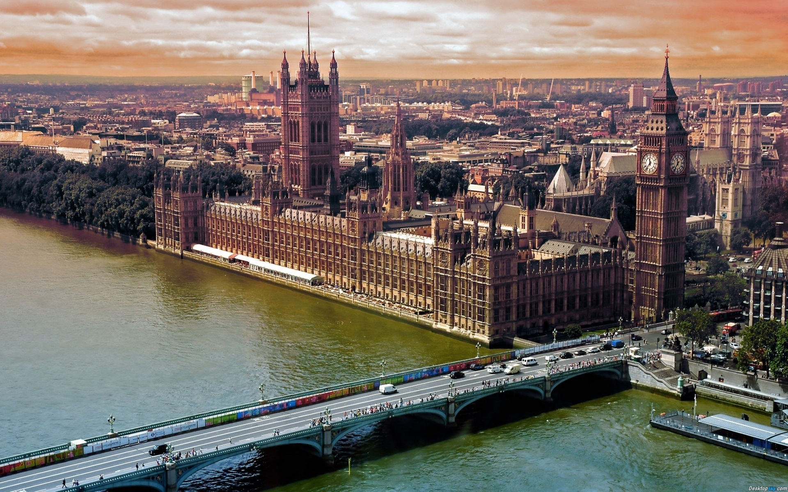
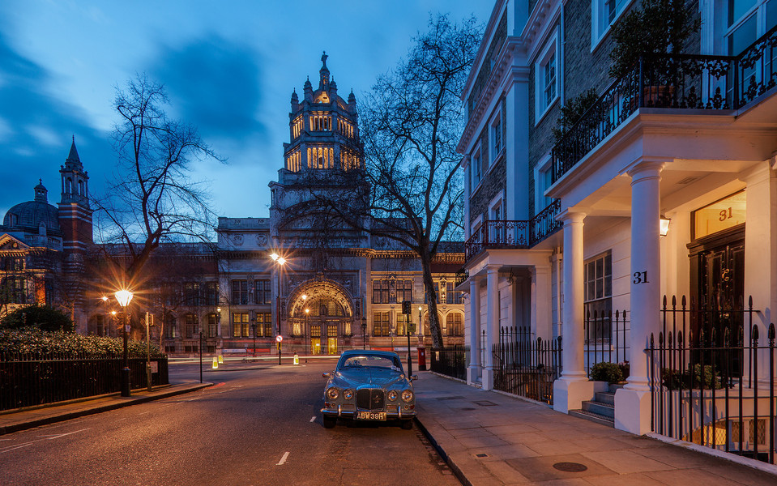
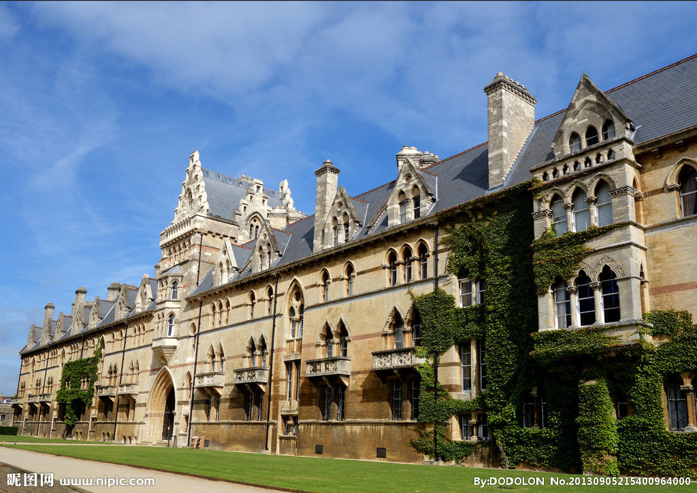

morly旅游网
一说到英国，你肯定想到了是美丽的风景，还有就是有很多时尚潮流的地方，想过去美丽的英国吗？
其是由大不列颠岛上的英格兰、威尔士和苏格兰，爱尔兰岛东北部的北爱尔兰以及一系列附属岛屿共同组成的一个西欧岛国。除本土之外，其还拥有十四个海外领地 ，总人口超过6400万，以英格兰人为主体民族。
1688年的光荣革命确立英国君主立宪政体，英国是世界上第一个工业化国家，首先完成工业革命，国力迅速壮大。18世纪至20世纪初期英国统治的领土跨越全球七大洲，是当时世界上最强大的国家，号称日不落帝国。
在两次世界大战中都取得了胜利，但国力严重受损。到20世纪下半叶大英帝国解体，资本主义世界霸主的地位被美国取代。不过，现在英国仍是一个在世界范围内有相当影响力的大国 。
伦敦
英国首都伦敦位于英格兰东南 部的平原上，跨泰晤士河，距离泰晤士河入海口88公里。
 爱丁堡
爱丁堡(Edinburgh)是英国著名的文化古城、苏格兰首府，位于苏格兰中部低地的福斯湾的南岸。面积260km²。1329年建市，1437-1707年为苏格兰王国首都。
 福尔摩斯博物馆
福尔摩斯博物馆位于英国伦敦贝克街(BakerSt)221b号，成立于1990年。馆内的布置摆设都以小说中提及的情节为佐，更增添福尔摩斯旧居的真实性。
 伊丽莎白塔
伊丽莎白塔(Elizabeth Tower)，旧称大本钟(Big Ben)，即威斯敏斯特宫钟塔，世界上著名的哥特式建筑之一，伦敦的标志性建筑，英国国会会议厅附属的钟楼(Clock Tower)的大报时钟，2012年6月，英国宣布把伦敦著名地标"大本钟"的钟楼改名为"伊丽莎白塔"。

英国是位于西欧的一个岛国，是由 大不列颠岛上英格兰、苏格兰、威尔士以及爱尔兰岛东北部的北爱尔兰共同组成的一个联邦制岛国。
英国被北海、英吉利海峡、凯尔特海、爱尔兰海和大西洋包围。东临北海，面对比利时、荷兰、德国、丹麦和挪威等国；西邻爱尔兰，横隔大西洋与美国、加拿大遥遥相对；北过大西洋可达冰岛；南穿英吉利海峡行33公里即为法国。国土面积24.41万平方公里（包括内陆水域）。
内容整理至网络，如有侵权，请联系我们！1255394075@qq.com